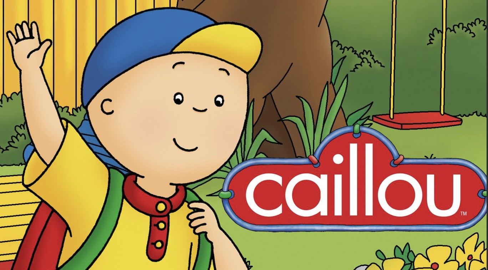

Caillou
Caillou (okunuşu: Kayu), Kanadalı yazar Christine L'Heureux ve Kanadalı çizer Hélène Desputaux'un kitaplarından televizyona uyarlanan Kanada yapımı ünlü bir çizgi dizidir. Dizi, Caillou adlı 4 yaşındaki bir erkek çocuğunun insanlarla ilişkilerini ve günlük yaşamını konu alır.
Caillou, konuşma yeteneği yeni gelişen meraklı ve hayal gücü yüksek bir çocuktur. Ailesi ve arkadaşlarıyla olan etkileşimleri aracılığıyla, çocuklara sosyal beceriler, problem çözme ve duygusal gelişim gibi önemli konuları öğretir.
Sizler de bu keyifli ve eğlence dolu çizgi filmi rahatlıkla çocuklarınıza izletebilirsiniz.